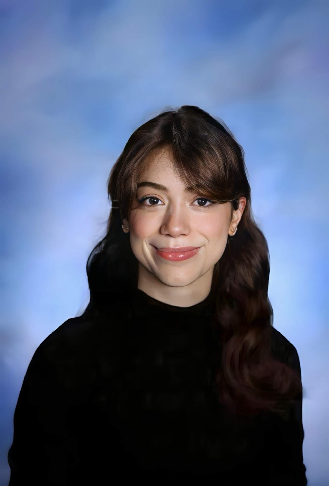

About
Giuliana C. Bilbao
A biomedical engineer building machine learning on physiological signals to drive intelligent medical devices and patient outcomes.

Education
- Columbia University · Dec 2025 M.S., Biomedical Engineering — Bioinformatics & Machine Learning Track
- Columbia University · May 2024 B.S., Biomedical Engineering — Neural Engineering concentration, minor in Psychology
Selected honors & programs
- Columbia Engineering Davis Scholar in Engineering
- Columbia CUSP Scholars Program
- Columbia AMGEN Scholars Program — competitive national summer research program; VTA stress & depression signaling
- Switzerland Fulbright U.S. Student Program — Finalist — advanced to the final selection round
- Cell Press Contributor, Neuron publication
- Present Johnson & Johnson Technology Leadership Development Program — Technical Product Owner of PRISM; secured VP-level sponsorship within my first year
Draft — replace with your actual course titles.
Machine Learning & AI
- Robot Learning
- Deep Learning
- Machine Learning
Signals, Systems & Control
- Digital Signal Processing
- Signals & Systems
- Control / Dynamical Systems
Mathematics & Computation
- Linear Algebra
- Probability & Statistics
- Differential Equations
Biomedical & Physiology
- Quantitative Physiology I & II
- Computational Modeling of Physiological Systems
- Biomedical Instrumentation
I started in the wet lab — running rodent behavioral, optogenetics, and fiber-photometry experiments in neuroscience labs, and harvesting tissue for osteoarthritis biomechanics studies. As an AMGEN Scholar at Columbia I studied VTA signaling in stress-induced depression, which crystallized my interest in the circuits behind behavior. Working that close to living systems is what pulled me toward the data they produce: I began writing the signal-processing and machine-learning pipelines that turned raw neural, cardiac, and mechanical recordings into something you could actually reason about. Contributing to work later published in Neuron (Cell Press) showed me how much sat in that gap between an experiment and its interpretation.
From there my work converged on a single throughline: applying ML and signal processing to the body — from-scratch DSP toolkits and EEG/EMG BCI analysis, foundation time-series models on wearable biosignals (PPG, PSG, ACC) for sleep staging and disease prediction, learned-dynamics control and diffusion policies for robot arms, and hardware I designed and characterized myself, including an EKG front-end and the sensing subsystem of a patented adaptive medical device.
At Johnson & Johnson's Technology Leadership Development Program I work across digital-health foundation models, clinical stroke-risk prediction, and the product and human-factors side of regulated medical software — which taught me to build technology that has to survive contact with real clinicians and real patients, not just a benchmark.